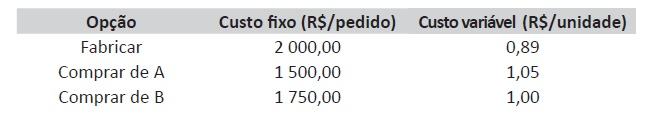

Um comprador que trabalha em uma fábrica de componentes de computador necessita atender a um pedido de 10 000 espaçadores — peças utilizadas em embalagens —, que poderão ser produzidos internamente ou comprados de um fornecedor que apresente a melhor proposta. Na tabela a seguir, mostram-se as condições que estão sob análise desse comprador.

A. avaliar o custo total e comprar do fornecedor A.
B. avaliar o custo total e comprar do fornecedor B.
C. avaliar o custo total e comprar no menor custo fixo.
D. avaliar o custo total e comprar no custo variável intermediário.
E. avaliar o custo total da operação de suprimentos e fabricar internamente.
Fonte: As questões desse simulado foram obtidas na prova disponibilizada no site do INEP - Instituto Nacional de Estudos e Pesquisas Educacionais Anísio Teixeira.
Créditos: Inep - Enade
Créditos de imagem: ENADE - Tecnologia em Logística, 2018.